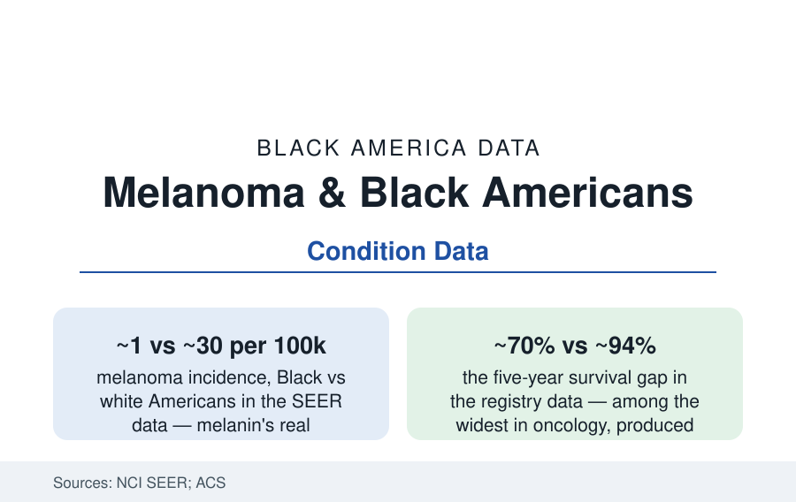

Black Public Health
Melanoma in Black Americans: Rare, and Therefore Found Late
Melanoma strikes Black Americans at a thirtieth the white rate — then kills at a far closer margin, because it hides where neither patients nor doctors look. The SEER data.

Melanoma in Black Americans is the cancer file's paradox of protection: melanin works — the incidence runs near one per hundred thousand against roughly thirty for white Americans in the SEER data — and the protection itself becomes the risk, because a disease nobody expects is a disease nobody looks for. When melanoma does arrive in Black patients it comes disproportionately in the form that hides — on the sole, the palm, under the nail — and it is found, on average, stages later, with a five-year survival near seventy percent against the mid-nineties. This article reads the rare cancer's data.
Acral Lentiginous: The Melanoma That Isn't About the Sun
The subtype distribution is the file's core fact: the melanomas of Black patients are predominantly acral lentiginous — arising on the palms, soles, and nail beds, in skin the sun never reaches, their cause not ultraviolet exposure in the current understanding (the mutation signatures in the genomic studies differing from the sun-driven tumors'), their incidence roughly equal across races in the registry analyses (the one melanoma whose rate melanin does not reduce — a few per million, everywhere, hiding in the body's least-examined real estate). Beside it: the mucosal melanomas (the sinuses, the mouth, the genital tract — rarer, later-found, in every population), and the conventional sun-site melanomas that do occur in Black patients at low rates (the fair-skinned and mixed-ancestry gradient inside the Black data in the studies that measure it). The clinical consequence writes itself in the diagnostic-delay literature: the changing spot on a white patient's shoulder triggers the culture's whole apparatus of suspicion (the mole-check campaigns, the ABCDE rule's posters); the dark streak under a Black patient's toenail reads, to patient and clinician alike, as a bruise, a fungus, a blood blister — the misdiagnosis chain in the case literature (treated for months as onychomycosis; the 'subungual hematoma' that never resolves) ending at the biopsy that comes a stage too late. Bob Marley's death — an acral melanoma under a toenail, in 1981, at thirty-six — remains the file's most famous case, four decades of awareness campaigns later still doing educational work no poster matched.
The System's Blind Spots, Measured
The dermatology data document the apparatus's calibration: the skin-cancer screening conversation built entirely on the sun-exposure model (the USPSTF's evidence review framed on fair skin; the screening of Black patients rare in the practice data — the total-body skin exam's rates in the visit data running lowest for the patients whose melanomas hide in the exam's least-performed regions: the feet, examined in a small minority of skin checks in the observational studies), the dermatology workforce of the employment file (three percent Black — the clinician whose differential includes acral disease from training and habit being statistically rare), the textbook file (the dermatology atlases' image libraries historically near-absent of dark-skin presentations in the content audits — the diagnostic eye trained on the wrong atlas, the recent corrective atlases and the skin-of-color curricula the current repair), and the insurance-and-access layer of every article in this section underneath. The other skin cancers complete the file's map: squamous cell carcinoma — in Black patients arising characteristically in scars, chronic wounds, and non-sun sites (the burn-scar and hidradenitis and lupus sites of the case series — the SCC that kills Black patients at rates the incidence would never predict, its mortality in some series exceeding the white toll despite a fraction of the cases), and basal cell carcinoma, rare and usually curable, the file's control case.
Survival, Treatment, and the Stage Ledger
The outcomes data make the file's argument complete: the survival gap decomposes almost wholly into stage (localized melanoma's survival above ninety-nine percent in the modern data for those found early — the immunotherapy era lifting even the advanced numbers); stage-matched, the treatment-response data show the modern regimens working across the registry's groups, with the access caveats this section knows (the tertiary referral, the trial-enrollment file's oncology numbers — the acral subtype's distinct biology drawing its own targeted-research attention in the recent literature, its immunotherapy response rates in the early studies running below the sun-driven tumors' — the rare-cancer research arithmetic, where a cancer of few-per-million struggles for its cohort in every trial). The prevention file for this cancer is not sunscreen — it is the foot exam, the nail-streak rule (a new or changing dark band, a spot on the sole that grows, a sore that will not heal: biopsy, whatever the patient's color, the dermatology academy's skin-of-color guidance in one line), and the clinician's calendar (the lesion present for a year being a finding, not a reassurance, in the delay studies' arithmetic).
Reading the Melanoma Data
A thirtieth of the incidence and a survival gap among oncology's widest: melanoma's file is the atlas's proof that rarity is itself a mechanism of disparity — the vigilance infrastructure built for the common case, the rare case arriving by the body's back roads to a system watching the highway. The sole of the foot is in every anatomy atlas. It only has to make it into the exam.
More in Black Public Health
Hypertension Among Black Adults: Prevalence, Control, and Consequences
About 55 percent of Black adults have hypertension — the highest rate of any U.S. group. Prevalence, onset, control, and the stroke, heart, and kidney consequences in the data.
Diabetes Among Black Adults: Prevalence and Complications
Nearly one in five Black adults has diabetes, diagnosed or undiagnosed — and its complications fall with particular weight. The CDC data on prevalence, control, and outcomes.
Black Life Expectancy: The Gap at Birth and Its Causes
Black life expectancy at birth is about 73 years, roughly five years below the national figure — the summary measure of every health gap in this section. The CDC data.
Source: American Cancer Society, Cancer Facts & Figures for African Americans; National Cancer Institute SEER Program; American Academy of Dermatology; JAMA Dermatology studies.